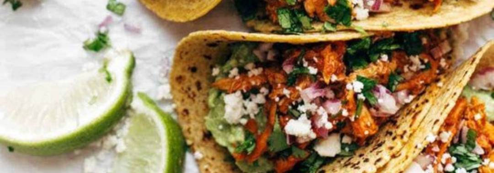
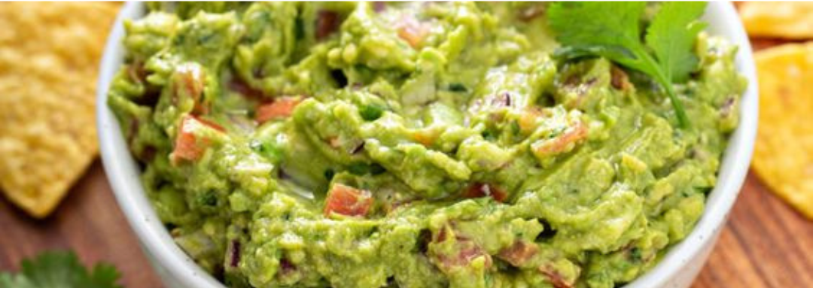
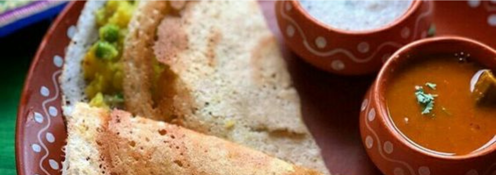
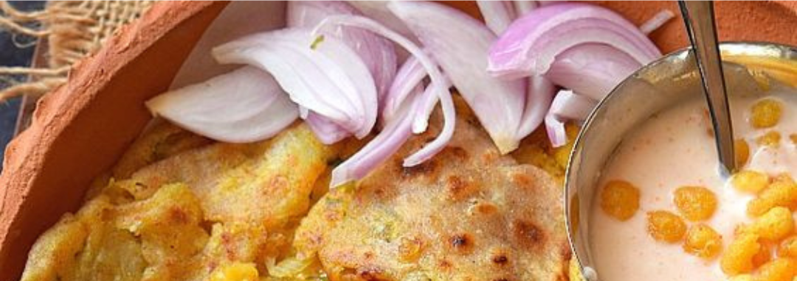
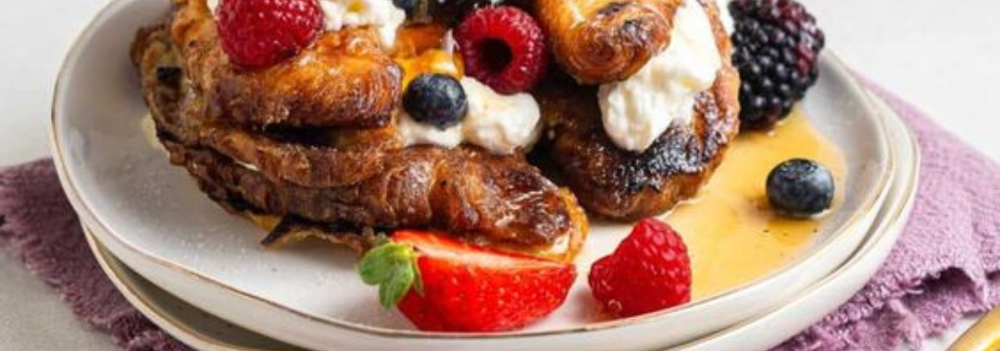
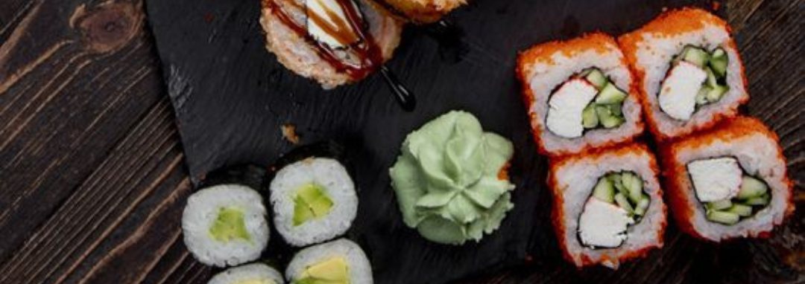
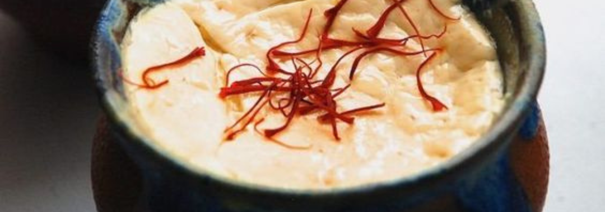
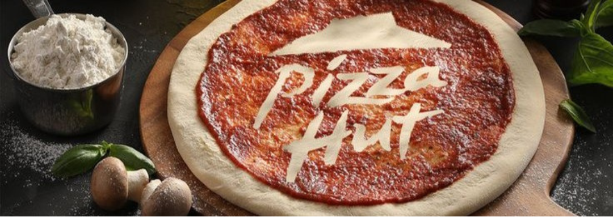

Savoring the Symphony of Noodles
Published on: January 15, 2023
Dive into the world of noodles with our exquisite selection. From the rich flavors of soy ginger ramen to the delicate texture of soba noodles, each dish is a culinary masterpiece. Join us on a journey as we explore the artistry behind our noodle creations.

Decoding the Secrets of Sushi
Published on: February 10, 2023
Unravel the mysteries of sushi as we take you behind the scenes of our sushi-making process. From the precision of nigiri to the creativity of uramaki rolls, discover the craftsmanship that goes into every piece. Join us for an insider's look at the delicate balance of flavors and textures.

Indulging in Irresistible Cakes
Published on: March 5, 2023
Sweeten your day with our decadent cakes. From the classic allure of chocolate cake to the exotic richness of espresso cake, each bite is a celebration. Learn about the inspiration behind our cake creations and the passion that goes into crafting these delightful confections.

Charm Your Taste Buds with Unique Ice Cream Flavors
Published on: April 20, 2023
Cool down with our artisanal ice creams featuring unique flavors like cotton candy and rich coco guava. Join us as we explore the delightful world of frozen treats, highlighting the creativity and innovation that makes each scoop a memorable experience.

Culinary Tales: A Journey through Noodle Varieties
Published on: June 8, 2023
Embark on a culinary adventure as we delve into the diverse world of noodles. From the origins of egg noodles to the cultural significance of rice noodles, discover the fascinating stories behind each variety. Join us for a cultural and gastronomic exploration.

The Art of Sushi Presentation
Published on: August 2, 2023
Explore the visual feast of sushi presentation. From the vibrant colors of sashimi to the intricate details of maki rolls, our sushi chefs elevate each dish to an art form. Join us as we delve into the aesthetics and techniques that make our sushi not just delicious but visually stunning.

Cake Creations: A Symphony of Flavors
Published on: September 15, 2023
Immerse yourself in the world of cakes as we showcase the symphony of flavors in each slice. From the timeless elegance of cheesecake to the warmth of carrot cake, experience the joy of indulgence. Discover the stories and inspirations behind our diverse cake creations.

Chasing Summer: Ice Cream Delights
Published on: November 1, 2023
As the seasons change, indulge in the vibrant flavors of summer with our refreshing ice creams. From the nostalgia of vanilla bean to the boldness of salted caramel, savor the essence of sunshine in every spoonful. Join us on a journey of taste and nostalgia as we celebrate the joys of summer through frozen delights.